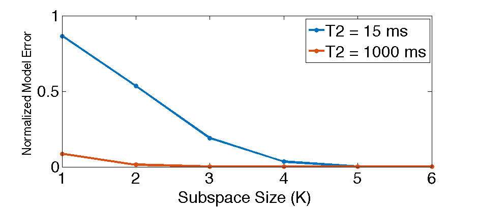
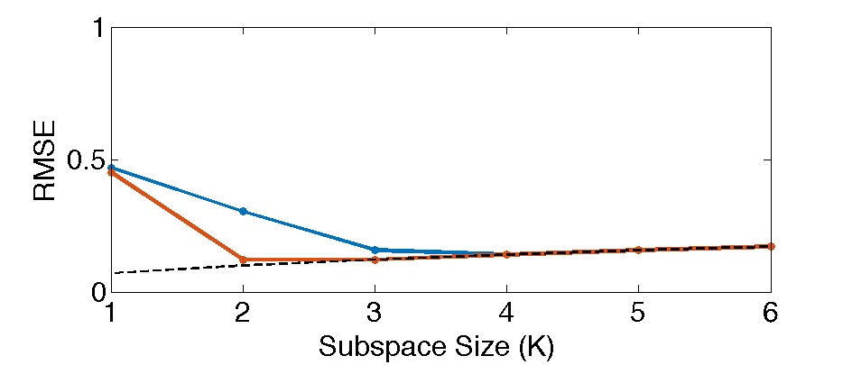

Contents
addpath src/utils/
Load the flip angles and basis
TE = 6.168e-3;
angles = dlmread('data/footsim/flipangles.txt');
angles_rad = angles * pi / 180;
Parameters
K = 4;
Bmax = .4;
T2min = 15 * 1e-3;
T2max = 1000 * 1e-3;
T1 = 1000 * 1e-3;
M = 256;
N = 256;
e2s = 2;
T = length(angles) - e2s - 1;
B_errs = linspace(-Bmax, Bmax, M);
T2_vals = linspace(T2min, T2max, N);
A_vals = zeros(T, M, N);
First simulate fully homogeneous signals and generate subspace
[~, A_0, ~, ~, ~, ~] = gen_FSEbasis(N, angles, T, e2s, TE, [T1], T2_vals, false);
[U, ~, ~] = svd(A_0, 'econ');
Phi = U(:,1:K);
B_0 = Phi*Phi'*A_0;
Next simulate inhomogeneous signals (this will take a while...)
for ii=1:M
B_err = B_errs(ii);
angles_ii = angles*(1+B_err);
[~, A_ii, ~, ~, ~, ~] = gen_FSEbasis(N, angles_ii, T, e2s, TE, [T1], T2_vals, false);
A_vals(:,ii,:) = A_ii;
end
Compute projection and normalized error map
B_vals = reshape(Phi*Phi'*reshape(A_vals, T, []), T, M, N);
err_map_n = squeeze(dimnorm(A_vals-B_vals, 1)./dimnorm(A_vals, 1))';
figure(1);
imshow(err_map_n', [0, 0.03]);
colormap('default')
colorbar
ftitle(['Normalized Modeling error (K=', num2str(K), ')'])
ylabel('B1 homogeneity %'); xlabel('T2 value'), faxis

Compute model error vs subspace size for each signal evolution
K_vals = 1:6;
ii_idx = [1, N];
Klen = length(K_vals);
L = length(ii_idx);
e1 = zeros(L, Klen);
e1n = zeros(L, Klen);
leg_str = cell(L, 1);
for ii=1:length(ii_idx)
x = A_0(:,ii_idx(ii));
e0 = zeros(1, Klen);
for kk=1:Klen
K = K_vals(kk);
Phi = U(:,1:K);
e0(kk) = norm(x - Phi*Phi'*x,2)^2;
end
e1(ii,:) = e0;
e1n(ii,:) = sqrt(e0) / norm(x);
T2v = T2_vals(ii_idx(ii));
leg_str{ii} = sprintf('T2 = %d ms\n', round(T2v*1000));
end
figure(2)
plot(K_vals, e1n, 'o-', 'linewidth', 4);
xlim([1, max(K_vals)]);
ylim([0,1])
xlabel('Subspace Size (K)');
legend(leg_str);
faxis(gca, 32);
ylabel('Normalized Model Error', 'FontSize', 24);

Compute RMSE vs subspace size for each signal evolution
stdev=.07;
A_vals = permute(repmat(A_0, [1, 1, Klen]), [1 3 2]);
SNRs = 10*log10(dimnorm(A_vals(:,:,ii_idx),1).^2 ./ (stdev^2 * repmat(K_vals, [1, 1, length(ii_idx)])));
figure(3)
plot(K_vals, sqrt(e1 + stdev^2*repmat(K_vals,length(ii_idx),1)), 'o-', 'linewidth', 4);
hold on, plot(K_vals, stdev*sqrt(K_vals), 'k--', 'linewidth', 2), hold off
xlabel('Subspace Size (K)');
ylabel('RMSE');
xlim([1, max(K_vals)]);
ylim([0,1])
faxis(gca, 32);
